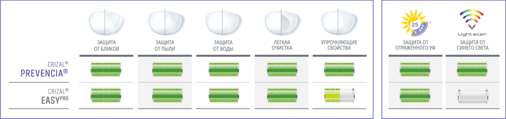

Не нравится, когда видите блики на очках вместо глаз?
Вас раздражают пятна и пыль на линзах?
Не нравится, когда видите блики на очках вместо глаз?


Crizal® EasyPro – легкоочищаемое антибликовое покрытие.
Благодаря своим грязе-, водоотталкивающим и антистатическим свойствам помогает защищать линзу от пятен, пыли и
воды.
Ежедневно пачкают ваши линзы. Приходится их очищать по несколько раз в день.
87%3 людей, носящих очки, отметили, что «лёгкое очищение», это
важное свойство линзы и влияет на решение о покупке.
БЛИКИ, ПЯТНА, ВОДА, ПЫЛЬ НА ЛИНЗАХ ОЧКОВ УХУДШАЮТ ЧЁТКОСТЬ ЗРЕНИЯ И ОКАЗЫВАЮТ ВЛИЯНИЕ НА:
Зрительный комфорт: отвлекают, особенно когда нужна полная концентрация внимания,
например,
за рулем.
Имидж: красивые очки с чистыми линзами, в которых собеседник видит выражение глаз,
а не блики – важная
составляющая любого образа.
Грязные линзы не должны вставать на пути вашего динамического образа жизни.
ПРЕДСТАВЛЯЕМ ЛИНЗЫ С ПОКРЫТИЕМ CRIZAL®EASY PRO ДЛЯ ЧЁТКОГО ЗРЕНИЯ КАЖДЫЙ ДЕНЬ.
